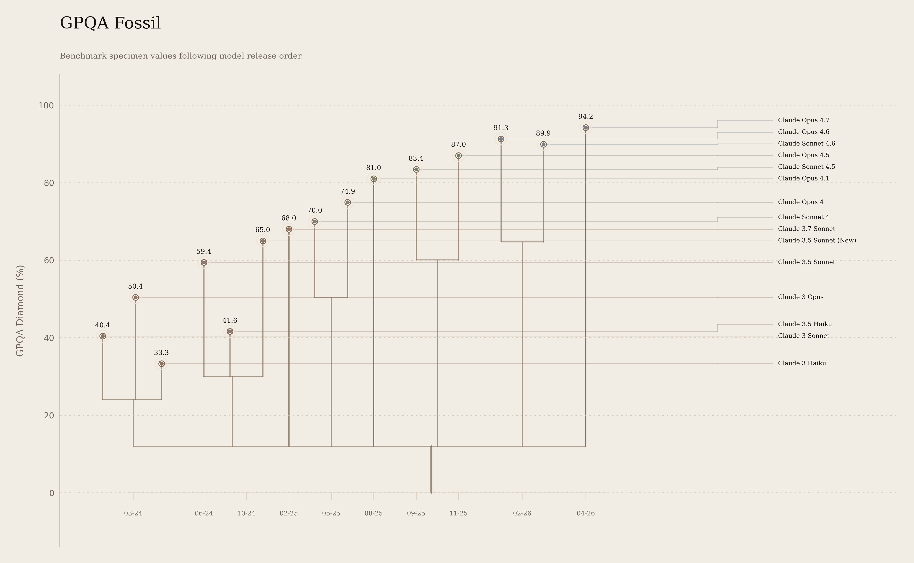

Mar 4, 2024
50.4
0-shot CoT from the updated Claude 3 model card.

Measured record
Model names link to the release page, and the source column links to the page or paper where the GPQA Diamond value was published.
Model
Released
GPQA Diamond
Source
Record note
Mar 4, 2024
50.4
0-shot CoT from the updated Claude 3 model card.
Mar 4, 2024
40.4
0-shot CoT from the updated Claude 3 model card.
Mar 7, 2024
33.3
Uses Anthropic's 2024-03-07 model version date; the GPQA value is 0-shot CoT from the updated model card.
Jun 20, 2024
59.4
Claude 3 model card addendum, 2024
0-shot CoT from Anthropic's June 2024 Claude 3.5 Sonnet addendum.
Oct 22, 2024
65.0
Claude 3 model card addendum, 2024
Upgraded Claude 3.5 Sonnet from Anthropic's October 2024 addendum; 0-shot CoT.
Oct 22, 2024
41.6
Claude 3 model card addendum, 2024
0-shot CoT from Anthropic's October 2024 addendum.
Feb 24, 2025
68.0
Anthropic's alignment post reports 68% on GPQA Diamond for Claude 3.7 Sonnet.
May 22, 2025
70.0
Reported in the Claude 4 launch comparison table without extended thinking.
May 22, 2025
74.9
Reported in the Claude 4 launch comparison table without extended thinking.
Aug 5, 2025
81.0
Launch page reports GPQA Diamond at a 64K max-thinking budget.
Sep 29, 2025
83.4
The Claude 4.5 system card reports GPQA Diamond with a 64K max-thinking budget.
Oct 15, 2025
—
No public Anthropic GPQA Diamond value was found for Claude Haiku 4.5 as of Apr 20, 2026.
Nov 24, 2025
87.0
The Claude 4.5 system card reports GPQA Diamond with a 64K max-thinking budget.
Feb 5, 2026
91.3
The Claude 4.6 system card reports GPQA Diamond at Anthropic's maximum thinking budget.
Feb 17, 2026
89.9
The Claude 4.6 system card reports GPQA Diamond at Anthropic's maximum thinking budget.
Apr 16, 2026
94.2
Claude Opus 4.7 system card, 2026
The Claude Opus 4.7 system card reports 94.2% on GPQA Diamond, averaged over 10 trials.